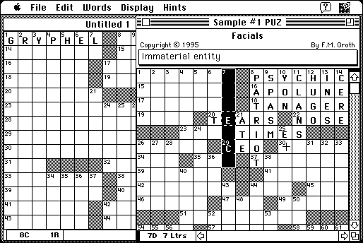

Download
Cruciverb68k.zip (782K) Cruciverbalist 1.1 repackaged into a zipped hfs disk image and checksum file. The disk image can be mounted with Mini vMac.
Cruciverb68k.sea.bin (819K) Cruciverbalist 1.1 in the original format.
copyright: The West Pole Software Company
mod date: Nov 27, 1997
license: freeware/shareware
last known url
(gone)
‘The Crossword Magician’. Shareware for creating puzzles. You can use it to solve puzzles for free. ‘Requires system 7’.

If you find these downloads useful, please consider helping the Gryphel Project, which hosts them.
Here are the md5 checksums for the downloads, signed with Gryphel Key 5:
--------- GRY SIGNED TEXT --------- 970e2e33327e493420e8b3439d302d29 Cruciverb68k.zip 1435d10035d88d0ae3cd386a54ed6e15 Cruciverb68k.sea.bin ------- BEGIN GRY SIGNATURE ------- Gry/4Xa8CFcUzxdN/DbJG+sg2zPodHXqNndsRsjLXeuPDiH7NRpqi2+fo/D79AcS 9TIP6buOg0c+skbGfe9hKgUrQW3l1OJ6FVoPA51CUaMfq/yvM5gZuajYE2ITdWi7 M7JB1/27f2+QoWYwoM51/4Ijq/O+GFKBZE1kEvppqMLdLT9wDLzCq3ylU+GGdWvX -------- END GRY SIGNATURE --------